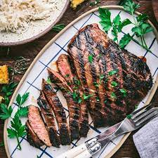
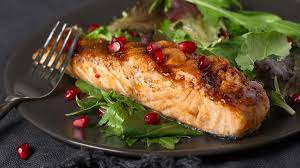
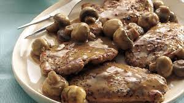
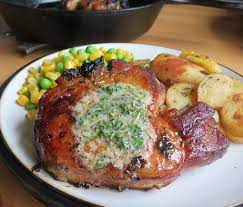

Kenpachi Dinner
Kenpachi Recipes

"Easy Marinated Grilled Flank Steak"

Flank steak doesn't have a lot of fat, so the marinade helps infuse the meat with flavor
and tenderize it at the same time. This marinade is made with pantry staples like red wine vinegar,
brown sugar, Worcestershire, and olive oil to keep things simple!
INGRIDIENTS:
1 cup barbecue sauce
1/2 cup burgundy wine or beef broth
1/4 cup lemon juice
1 beef flank steak (2 pounds)
"Fruited Pot Roast"

"This is a great alternative to the usual way of cooking a pot roast
since it has just a little hint of fruity sweetness to it, and the cooked apricots
and prunes add a delicious depth of flavor to the roast as well."
INGRIDIENTS:
1 package (7 ounces) mixed dried fruit
1 large onion, cut into wedges
1 can (5-1/2 ounces) unsweetened apple juice
1 boneless beef chuck roast (2 pounds)
1/2 teaspoon salt
1/4 teaspoon ground allspice
1/4 teaspoon pepper
"Orange Pomegranate Salmon"

Salmon are rich in omega-3 fatty acid that contribute to healthy heart,
support skin elasticity, and improve your brain health. Being packed in anti-inflammatory compound
and vitamin C, pomegranate and citrus fruits are exceptionally good for you to boost your immunity.
INGRIDIENTS:
1 small red onion, thinly sliced
1 skinned salmon fillet (about 2 pounds)
1/2 teaspoon salt
1 medium navel orange, thinly sliced
1 cup pomegranate seeds
2 tablespoons extra virgin olive oil
1 tablespoon minced fresh dill
"Peppered Pork with Mushroom Sauce"

sing pre-seasoned pork tenderloin gives us flavorful, quick and satisfying meals without a
big mess or leftovers. I have used all flavors of pork tenderloin for this recipe. Making the sauce
doesn't take much extra time and results are well worth it
INGRIDIENTS:
2 tablespoons olive oil, divided
1 peppercorn pork tenderloin (1 pound) or flavor of your choice, cut into 3/4-inch slices
1/2 cup sliced fresh mushrooms
1/4 cup chopped onion
2 tablespoons all-purpose flour
1 cup reduced-sodium beef broth
"Herbed Pork Chops"

Hot pan drippings and melted butter tease the essential oils out of rosemary, thyme,
and sage, creating rich juices for basting pork chops during the final minutes of cooking. Thai chiles
add heat to the dish; to dial back the spiciness, cut a slit in the chiles instead of halving them.
Serve over mashed or roasted potatoes to help sop up the flavorful juices.
INGRIDIENTS:
4 boneless pork loin chops (4 ounces each)
2 teaspoons lemon juice
2 tablespoons chopped fresh parsley
1/2 teaspoon dried rosemary, crushed
1/2 teaspoon dried thyme, crushed
1/4 teaspoon pepper